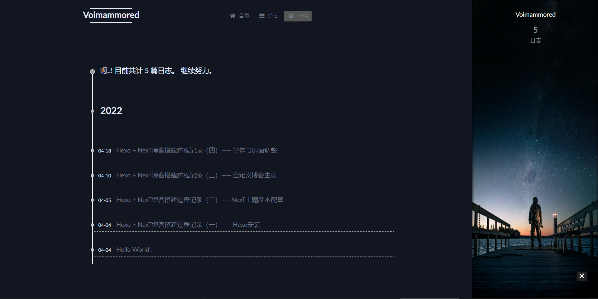

经过前几篇文章的调整，显示文章已经基本没有问题了。本篇文章主要记录一下博客界面的美化过程。
字体
NexT主题在主题配置文件中为我们提供了一部分可以自定义的内容，例如字体和字体大小等等。然而我想要调整的字体颜色却不在其中，网上也搜索不到相关的配置文件位置。
我翻了翻主题的文件，终于找到了字体配置所在的位置：
next/source/css/_variables/base.styl
其中可供修改的内容相当丰富，下面贴出我修改过的内容（注释是默认值）：
1
2
3
4
5
6
7
8
9
10
11
12
13
14
15
16
17
18
19
20
21
22
23
24
25
26
27
28
29
30// Global text color on <body>
$text-color = $black-light;
//$text-color-dark = $grey-light;
$text-color-dark = #E4ECFA;
// Global link color.
$link-color = $black-light;
//$link-color-dark = $grey-light;
$link-color-dark = #6E7688;
// Background color for <body>
$body-bg-color = white;
//$body-bg-color-dark = #282828;
$body-bg-color-dark = #121621;
$content-bg-color = white;
//$content-bg-color-dark = $black-dim;
$content-bg-color-dark = #121621;
$code-font-family = $font-family-monospace;
//$code-foreground = $black-light;
$code-foreground = white;
//$code-background = $gainsboro;
$code-background = black;
//$brand-color-dark = $grey-lighter;
//$brand-hover-color-dark = $grey-lighter;
$brand-color-dark = #E4ECFA;
$brand-hover-color-dark = #E4ECFA;
Darkmode修复
前面的文章提到过Darkmode在许多浏览器及移动端都是无效的。
一个简单粗暴的方法是打开色彩配置文件，把默认的配置行注释掉，再把Darkmode下的配置复制过来。
色彩配置文件位置： >themes/next/source/css/_colors.styl
修改后的色彩配置文件： 1
2
3
4
5
6
7
8
9
10
11
12
13
14
15
16
17
18
19
20
21
22
23
24
25
26
27
28
29
30
31
32
33
34
35
36
37
38:root {
// --body-bg-color: $body-bg-color;
// --content-bg-color: $content-bg-color;
// --card-bg-color: $card-bg-color;
// --text-color: $text-color;
// --blockquote-color: $blockquote-color;
// --link-color: $link-color;
// --link-hover-color: $link-hover-color;
// --brand-color: $brand-color;
// --brand-hover-color: $brand-hover-color;
// --table-row-odd-bg-color: $table-row-odd-bg-color;
// --table-row-hover-bg-color: $table-row-hover-bg-color;
// --menu-item-bg-color: $menu-item-bg-color;
// --btn-default-bg: $btn-default-bg;
// --btn-default-color: $btn-default-color;
// --btn-default-border-color: $btn-default-border-color;
// --btn-default-hover-bg: $btn-default-hover-bg;
// --btn-default-hover-color: $btn-default-hover-color;
// --btn-default-hover-border-color: $btn-default-hover-border-color;
--body-bg-color: $body-bg-color-dark;
--content-bg-color: $content-bg-color-dark;
--card-bg-color: $card-bg-color-dark;
--text-color: $text-color-dark;
--blockquote-color: $blockquote-color-dark;
--link-color: $link-color-dark;
--link-hover-color: $link-hover-color-dark;
--brand-color: $brand-color-dark;
--brand-hover-color: $brand-hover-color-dark;
--table-row-odd-bg-color: $table-row-odd-bg-color-dark;
--table-row-hover-bg-color: $table-row-hover-bg-color-dark;
--menu-item-bg-color: $menu-item-bg-color-dark;
--btn-default-bg: $btn-default-bg-dark;
--btn-default-color: $btn-default-color-dark;
--btn-default-border-color: $btn-default-border-color-dark;
--btn-default-hover-bg: $btn-default-hover-bg-dark;
--btn-default-hover-color: $btn-default-hover-color-dark;
--btn-default-hover-border-color: $btn-default-hover-border-color-dark;
}
侧边栏添加背景图片
纯色组成的网页看上去多少有些单调，我们可以在侧边栏文件里添加背景图片使网页更加美观。
以我使用的Mist Scheme为例，侧边栏的设置文件路径如下：
themes/next/source/css/_schemes/Muse/_sidebar.styl
插入代码background:url(/images/sidebar_bg.png)为侧边栏添加背景图片(Muse/Mist
Scheme下的图片大小为320 × 800)。 1
2
3
4
5
6
7
8
9
10
11if (hexo-config('sidebar.position') == 'right') {
.sidebar {
background:url(/images/sidebar_bg.png);
right: 0 - $sidebar-desktop;
&.sidebar-active {
right: 0;
}
}
最终效果： 